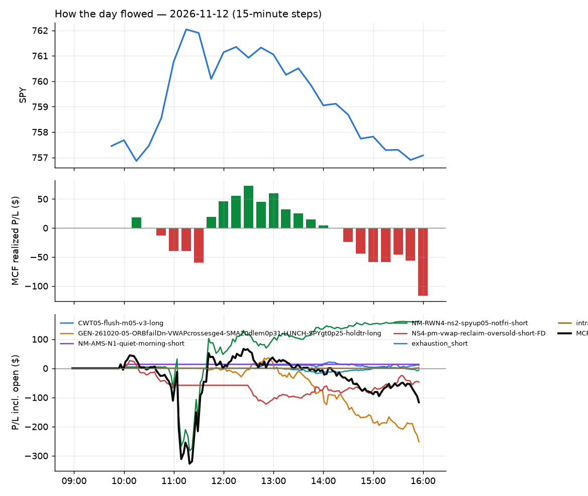
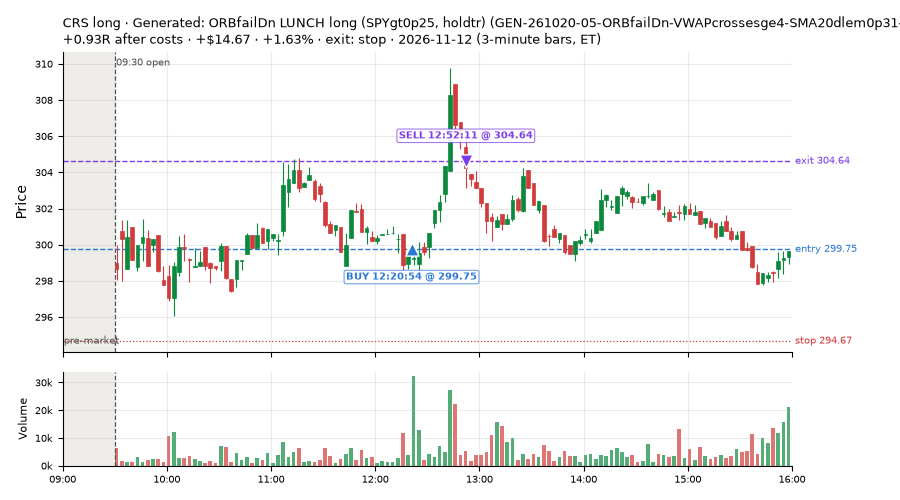
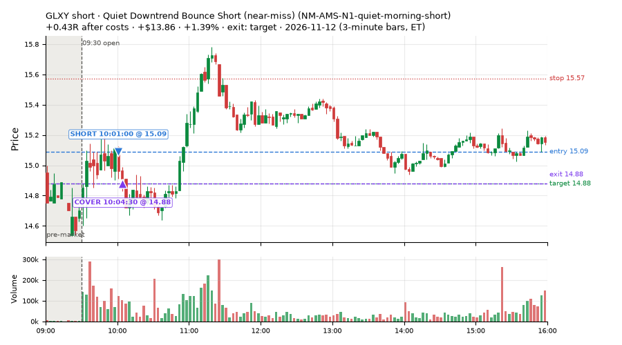
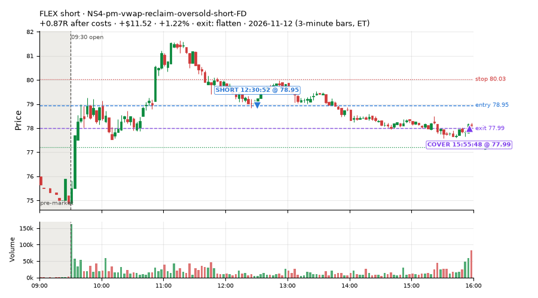
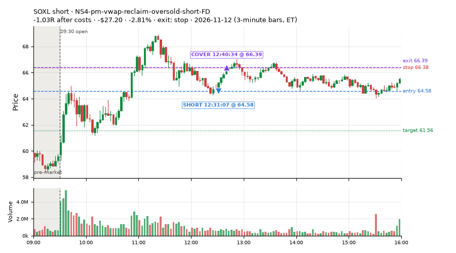
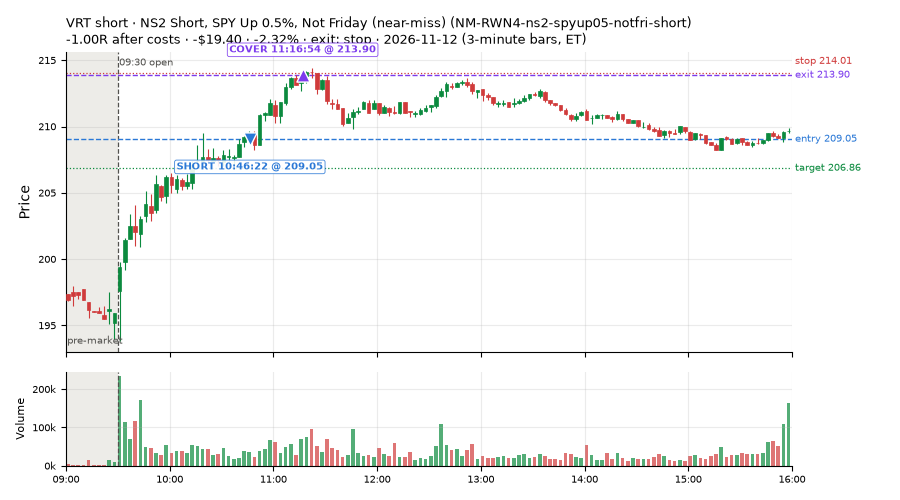
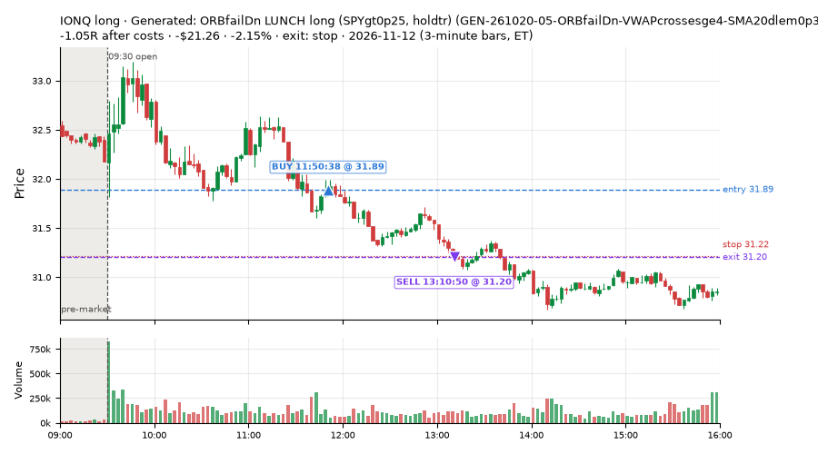
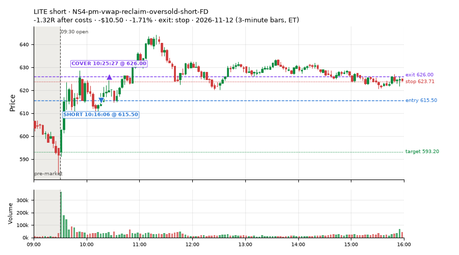
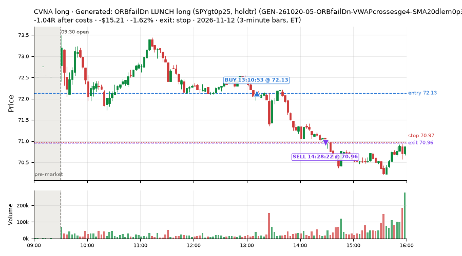

95 trades · win rate 52% · P/L $-116.57
PROBATION: no live setup has passed both locked test periods. 10 owner-directed setups added 2026-10-08 (MarcoFlow top 5 + 5 new), untested live. RW6G1 (RW6 + VWAP band guard) added 2026-10-09, probation.

| Symbol | Setup | Side | In | Out | Entry | Exit | Exit reason | % gained | P/L |
|---|---|---|---|---|---|---|---|---|---|
| CRS | Generated: ORBfailDn LUNCH long (SPYgt0p25, holdtr) (GEN-261020-05-ORBfailDn-VWAPcrossesge4-SMA20dlem0p31-LUNCH-SPYgt0p25-holdtr-long) | long | 12:20 | 12:52 | 299.75 | 304.64 | stop | +1.63% | $14.67 |
| GLXY | Quiet Downtrend Bounce Short (near-miss) (NM-AMS-N1-quiet-morning-short) | short | 10:01 | 10:04 | 15.09 | 14.88 | target | +1.39% | $13.86 |
| FLEX | NS4-pm-vwap-reclaim-oversold-short-FD | short | 12:30 | 15:55 | 78.95 | 77.99 | flatten | +1.22% | $11.52 |
| Symbol | Setup | Side | In | Out | Entry | Exit | Exit reason | % lost | P/L |
|---|---|---|---|---|---|---|---|---|---|
| SOXL | NS4-pm-vwap-reclaim-oversold-short-FD | short | 12:31 | 12:40 | 64.58 | 66.39 | stop | -2.81% | $-27.20 |
| VRT | NM-RWN4-ns2-spyup05-notfri-short | short | 10:46 | 11:16 | 209.05 | 213.90 | stop | -2.32% | $-19.40 |
| IONQ | GEN-261020-05-ORBfailDn-VWAPcrossesge4-SMA20dlem0p31-LUNCH-SPYgt0p25-holdtr-long | long | 11:50 | 13:10 | 31.89 | 31.20 | stop | -2.15% | $-21.26 |
| LITE | NS4-pm-vwap-reclaim-oversold-short-FD | short | 10:16 | 10:25 | 615.50 | 626.00 | stop | -1.71% | $-10.50 |
| CVNA | GEN-261020-05-ORBfailDn-VWAPcrossesge4-SMA20dlem0p31-LUNCH-SPYgt0p25-holdtr-long | long | 13:10 | 14:28 | 72.13 | 70.96 | stop | -1.62% | $-15.21 |








Signal to fill: median 2s, 90th percentile 5s (95 trades). Bars close each minute; the order follows the bar close.
Best excursion (MFE): median 0.42R; worst (MAE) median 0.66R. 25% of trades never got +0.25R in our favour; 1 reached +1R and still closed at or below 0.
| Symbol | Setup | Best R | Worst R | Closed R |
|---|---|---|---|---|
| SMH | NS4-pm-vwap-reclaim-oversold-short-FD | +1.04 | -1.13 | -1.21 |
| SKHY | NS4-pm-vwap-reclaim-oversold-short-FD | +0.85 | -1.10 | -1.06 |
| ASX | NS4-pm-vwap-reclaim-oversold-short-FD | +0.74 | -1.25 | -1.13 |
| ASX | NS4-pm-vwap-reclaim-oversold-short-FD | +0.61 | -1.04 | -1.07 |
| OTIS | GEN-261020-05-ORBfailDn-VWAPcrossesge4-SMA20dlem0p31-LUNCH-SPYgt0p25-holdtr-long | +0.46 | -1.11 | -1.14 |
| Entry time | Trades | Win | Avg R | P/L |
|---|---|---|---|---|
| 09:50-10:30 | 7 | 29% | -0.72 | $-39.77 |
| 10:30-11:30 | 31 | 97% | +0.30 | $157.39 |
| 11:30-13:00 | 33 | 27% | -0.42 | $-158.00 |
| 13:00-14:00 | 16 | 19% | -0.49 | $-82.39 |
| 14:00-16:00 | 8 | 62% | +0.03 | $6.20 |
| Setup | Trades | Win | Avg R after costs | Adj R (net of SPY) | Avg R ex-market (all sessions) | P/L |
|---|---|---|---|---|---|---|
| Panic Flush Reversal (3x volume) (CWT05-flush-m05-v3-long) | 2.0 | 50% | +0.22 | +0.30 | – | $10.38 |
| Generated: ORBfailDn LUNCH long (SPYgt0p25, holdtr) (GEN-261020-05-ORBfailDn-VWAPcrossesge4-SMA20dlem0p31-LUNCH-SPYgt0p25-holdtr-long) | 37.0 | 8% | -0.65 | -0.29 | -0.85 (beta -0.48, n 37) | $-252.02 |
| Quiet Downtrend Bounce Short (near-miss) (NM-AMS-N1-quiet-morning-short) | 1.0 | 100% | +0.43 | +0.43 | – | $13.86 |
| NS2 Short, SPY Up 0.5%, Not Friday (near-miss) (NM-RWN4-ns2-spyup05-notfri-short) | 32.0 | 97% | +0.30 | +0.22 | +0.23 (beta -0.88, n 32) | $161.91 |
| NS4-pm-vwap-reclaim-oversold-short-FD | 17.0 | 53% | -0.20 | -0.44 | -0.65 (beta -2.06, n 17) | $-46.89 |
| Afternoon Blow-off Short (exhaustion_short) failed Apr-Jun holdout: -0.020R/trade over 622 trades | 3.0 | 67% | -0.25 | -0.58 | – | $-5.75 |
| Index Last-Half-Hour Momentum (intraday_momentum) failed Apr-Jun holdout: -0.091R/trade over 147 trades | 3.0 | 67% | +0.13 | -0.07 | – | $1.94 |
Market direction (SPY, beta 1) accounted for $-79.59 of today's $-116.57; the rest ($-36.98) came from the setups themselves. Avg R net of SPY: -0.13 (incl. a hedge leg's cost; report only).
10 setups live today. Today: 239 signals, 95 taken, 0 lost because another setup held the symbol (0%). Since 2026-11-12 (1 sessions): 239 signals, 95 taken, 0 lost to other setups (0%). Peak open positions today 47 of 200 slots. Earnings blackout removed 576 symbols before scanning.
Simulated playing time (not live): 144 what-if trades of signals not taken, avg -0.00R, 58% winners; of them 0 lost to another setup.
| Prio | Setup | Today sig / taken | Sessions | Signals / taken / trades | Taken/day | Expected/day | Lost to other setups | Lost to (setup n) | Top skip reasons | SIMULATED: not-taken n / avg R / win | Verdict |
|---|---|---|---|---|---|---|---|---|---|---|---|
| 1 | Index Dip Bounce 3 3x S&P IDX3-spy075-0955-3x-trail | 0 / 0 | 1 | 0 / 0 / 0 | 0.00 | – | 0 | – | – | 0 / – | quiet - wait no signals in 1 session(s); too early to tell |
| 2 | * Oversold Slope Turn with Breadth Turning Up (near-miss) LD5-st2-breadthup-t05s1-long | 0 / 0 | 1 | 0 / 0 / 0 | 0.00 | – | 0 | – | – | 0 / – | quiet - wait no signals in 1 session(s); too early to tell |
| 3 | NS2 Short, SPY Up 0.5%, Not Friday (near-miss) NM-RWN4-ns2-spyup05-notfri-short | 105 / 32 | 1 | 105 / 32 / 32 | 32.00 | – | 0 | – | per-setup cap 54, spread / quote / size 14, not shortable / shorts off 4 | 73 / +0.34R / 90% | ok 160.0 entries/week |
| 4 | Quiet Downtrend Bounce Short (near-miss) NM-AMS-N1-quiet-morning-short | 1 / 1 | 1 | 1 / 1 / 1 | 1.00 | – | 0 | – | – | 0 / – | slow 5.0 entries/week; ~12 weeks to 60 trades |
| 5 | Generated: ORBfailDn LUNCH long (SPYgt0p25, holdtr) GEN-261020-05-ORBfailDn-VWAPcrossesge4-SMA20dlem0p31-LUNCH-SPYgt0p25-holdtr-long | 79 / 37 | 1 | 79 / 37 / 37 | 37.00 | – | 0 | – | per-setup cap 30, other 7, spread / quote / size 5 | 42 / -0.50R / 14% | ok 185.0 entries/week |
| 6 | Early Sellers Above VWAP MF1-945-flowsell-vwapup | 9 / 0 | 1 | 9 / 0 / 0 | 0.00 | 5.33 | 0 | – | spread / quote / size 7, not shortable / shorts off 1, other 1 | 9 / -0.24R / 22% | watch 0.00 entries/day vs ~5.33 expected |
| 7 | NS4-pm-vwap-reclaim-oversold-short-FD NS4-pm-vwap-reclaim-oversold-short-FD | 28 / 17 | 1 | 28 / 17 / 17 | 17.00 | 3.57 | 0 | – | not shortable / shorts off 5, spread / quote / size 3, other 3 | 11 / -0.34R / 36% | ok 85.0 entries/week |
| 8 | Panic Flush Reversal (3x volume) CWT05-flush-m05-v3-long | 5 / 2 | 1 | 5 / 2 / 2 | 2.00 | – | 0 | – | spread / quote / size 2, broker rejected 1 | 3 / +0.66R / 100% | slow 10.0 entries/week; ~6 weeks to 60 trades |
| 9 | Afternoon Blow-off Short exhaustion_short | 9 / 3 | 1 | 9 / 3 / 3 | 3.00 | 12.12 | 0 | – | not shortable / shorts off 5, other 1 | 6 / -0.03R / 33% | watch 3.00 entries/day vs ~12.12 expected |
| 10 | Index Last-Half-Hour Momentum intraday_momentum | 3 / 3 | 1 | 3 / 3 / 3 | 3.00 | 2.37 | 0 | – | – | 0 / – | ok 15.0 entries/week |
Every trade is attached as a CSV you can open and edit in Excel or Google Sheets. Live page: https://misiti15.github.io/MCF/live/